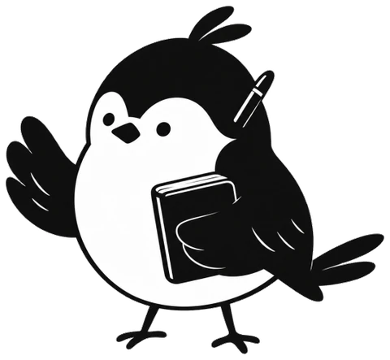

내 하루가
나만의 외국어 교재로.
일기를 쓰면, 그 이야기로
외국어를 듣고 말하고 복습합니다.
Say My Day · PO 프로젝트오늘의 이야기오늘 친구와 우동을 먹었다.
내일은 이 이야기를
외국어로 말해 보고 싶다.

“오늘 친구와 우동을 먹었다.”
어떻게 읽지? · 이 단어는 무슨 뜻이지? · 내일도 말할 수 있을까?
오늘 있었던 일부터.
모국어로 한 줄이라도 쓰면 학습 재료가 됩니다.
한국어 → 중국어 · 한국어 → 일본어 · 중국어 → 일본어내 문장이라서, 처음부터 아는 이야기.
발음을 보며 듣고 말하고, 단어와 문법을 익힙니다.
한국어 → 중국어 · 한국어 → 일본어 · 중국어 → 일본어지난 일기가 다시 배울 교재가 됩니다.
일기책을 다시 펼치고, 저장한 단어를 복습합니다.
한국어 → 중국어 · 한국어 → 일본어 · 중국어 → 일본어README.md
직접 보면,
더 간단합니다.
오늘의 이야기를 기록합니다.
모국어로 쓴 일기가 학습 재료로 바뀝니다.
시연 영상: 제출물 참고
내 이야기 쓰기내 문장으로 학습오늘의 학습 마무리 내 이야기가 학습이 되는가?
쓰기·번역에서 듣고 말하기, 단어, 전체 읽기, 마무리까지.
기능 수보다 한 번의 학습이 끝까지 이어지는 것을 우선했습니다.
핵심 흐름을 흐리지 않도록.
정밀 발음 평가·꾸미기·가리고 말하기는 보류했습니다.
마이크는 기본으로 끄고, 마이크 없이도 학습하게 했습니다.
PO의 기준 “이 기능이 있어야 내 일기가 학습이 되는가?”
T38·T44 설계 문서 · README.md
모두 보여 줄까,
하나씩 안내할까.
긴 결과 목록을
한 번에 한 가지 하는 카드로.
다음 행동을 화면이 안내합니다.
설명은 필요할 때 더 볼 수 있습니다.
감수한 것 카드를 넘기는 조작은 늘어납니다.
이전 · 긴 결과 목록 전체 화면 보기현재 · 문장 중심 카드 전체 화면 보기한 번에 한 가지집중을 위한 설계 선택
T44 학습 흐름 제안 · compare.stepsToFinish
일기책에는 나의 이야기가,
작은 새에는 학습한 날이 쌓입니다.
쉬어도 누적한 학습 일수는 줄지 않습니다.
지난 일기를 다시 펼치고,
저장한 단어로 다음 학습을 이어갑니다.
학습 중 닫아도 자리를 기억하고,
번역이 실패해도 쓴 일기는 남깁니다.
나의 일기책 전체 화면 보기오늘의 학습과 성장 전체 화면 보기 T38 사용 여정 계획 · stability.md
한 화면에서 보이는 선택지
선택할 것을 줄이려 한 설계가 화면 수치로 드러났습니다.
끝까지 보는 조작 횟수
이전: 화면 스와이프 / 현재: 카드 넘기기 탭 · 서로 다른 행동입니다.
좋아진 수치만 고르지 않았습니다.
한 번에 보이는 선택지는 줄었지만,
카드를 넘기는 비용은 늘었습니다.
실제로 더 배우기 쉬워졌는지는
사람과 확인해야 합니다.
metrics.json / compare.visibleChoices · stepsToFinish
먼저, 답이 지킬 경계부터.
바꾼 것일기에 없는 사실을 더하지 않고
쉬운 말로 번역하게 했습니다.
자연스러운 문장과 학습용 설명의 기준을 정했습니다.
길면 읽기 어렵고,
이유가 없으면 배우기 어렵습니다.
바꾼 것긴 문장을 나누고
단어를 고른 이유를 붙였습니다.
읽고 소리 내어 말할 수 있는 단위로 만들려 했습니다.
예문의 뜻을 몰라
다시 번역하지 않도록.
바꾼 것단어·문법·활용 예문에
한국어 뜻을 함께 넣었습니다.
학습자가 뜻을 확인하는 과정까지 연결했습니다.
AI가 만든 답을
다른 관점으로 다시 확인했습니다.
바꾼 것원문 변형·어감 누락·발음 오류를 찾아
원문 보존과 규칙·교정 표로 보완했습니다.
AI의 설명을 곧바로 정답으로 받아들이지 않았습니다.
단어를 눌러 배우려면,
답의 구조부터 달라야 했습니다.
바꾼 것문장을 단어 단위로 나누고,
모호한 부분에 문장 번호를 붙였습니다.
프롬프트도 화면에서 하려는 행동에 맞춰 바꿨습니다.
프롬프트.md §1·2
사용자 요구대안 검토사용자 승인구현·시험·기록 큰 주문 대신,
끝낼 수 있는 작업 카드.
완료 기준 → 시험 → 기록 → 로컬 변경 기록
“이 학습 부분 설계를 심도있게 검토해서 제안해줘.
이게 이 앱의 핵심이야.”
CLAUDE.md에
작업의 경계를 남겼습니다.
실제 데이터는 건드리지 않기 · 키는 출력·커밋하지 않기
분리한 환경에서 시험하기 · 푸시는 사용자 승인 뒤에
같은 기준을,
반복해서 적용했습니다.
/say-my-day-design · 확정 디자인 기준을 적용
contrast-check · 밝고 어두운 화면의 글자 대비를 점검
프롬프트.md §3·4
음식 이야기도 사람 이름으로 번역될까?
- 발견
- 사용자가 같은 말이 음식과 별명으로 쓰일 수 있다고 질문했습니다.
- 원인
- “항상 이 이름으로”라는 규칙이 음식 문맥과 충돌했습니다.
- 수정
- 문맥 우선 규칙과 이름·표현 종류 선택을 추가했습니다.
- 다시 막기
- 반영 표시와 사전 없이 다시 번역하는 길을 남겼습니다.
시험이 실제 API 키를 읽고 있었습니다.
- 발견
- 사용자가 API 사용량을 물어 확인했습니다.
- 원인
- 시험 서버가 실제 키가 든 설정 파일을 읽었습니다.
- 수정
- 시험 서버의 키를 빈 값으로 덮어쓰게 했습니다.
- 다시 막기
- 시험에서 유료 호출을 하지 않는 규칙을 남겼습니다.
시험 기록이 실제 기록에 섞였습니다.
- 발견
- 화면을 확인하다 새 단계가 잘못 올라간 것을 발견했습니다.
- 원인
- 가짜 학습일이 실제 동기화 파일에 섞였습니다.
- 수정
- 정리 전 파일을 보관하고, 가짜 항목만 제거했습니다.
- 다시 막기
- 날짜 형식 검사와 시험 환경 분리 규칙을 추가했습니다.
삭제 확인이 바로 닫혀 버렸습니다.
- 발견
- 사용자 신고를 브라우저에서 재현했습니다.
- 원인
- 새로 그려진 단추를 “바깥 클릭”으로 잘못 판단했습니다.
- 수정
- 화면에 연결된 요소만 바깥 클릭으로 처리했습니다.
- 다시 막기
- 같은 문제가 다시 생기지 않도록 삭제 시험을 추가했습니다.
학습 설계가 마이크 상태를 놓쳤습니다.
- 발견
- 구현 중 코드에서 마이크가 꺼져 있다는 사실을 확인했습니다.
- 원인
- 제안 단계에서 기능의 실제 상태를 놓쳤습니다.
- 수정
- 마이크 없이도 진행하는 흐름부터 만들었습니다.
- 다시 막기
- 사용자에게 사실을 보고하고 기기 검증의 한계를 남겼습니다.
디자인 제작 파일이 변경 기록에 섞였습니다.
- 발견
- 배포 전 푸시 크기를 점검하며 발견했습니다.
- 원인
- 대용량 디자인 제작 파일이 커밋에 포함됐습니다.
- 수정
- 원본을 보존한 별도 복사본에서 기록을 정리했습니다.
- 다시 막기
- 해당 제작 폴더를 버전 관리에서 제외했습니다.
프롬프트.md §5 · 실제 기록을 쉬운 말로 재구성
내일의 한 줄이,
오늘보다 쉬워지도록.
내 이야기를 기록하고,
그 이야기를 내 언어로 만들어 갑니다.
다음에 확인할 것실제 학습자가 끝까지 배우는가?
시간과 만족도는 어떠한가?
단어 리스트 길이·마이크·AI 번역의 한계도 남아 있습니다. 앱 열어 보기 발표의 근거와 제출물.
필요한 자료를 바로 확인할 수 있습니다.
질문에 따라 더 살펴보기
README.md · submission 자료
| 바꾼 것 | 0단계 검증용. HSK 1~3급, 자연스러운 번역, 병음은 앱이 생성, 모호한 말은 ambiguities, 일기에 없는 사실 금지, JSON만 출력 |
|---|
| 왜 바꿨나 | 키 없이 Claude Code 세션이 규칙대로 직접 만든 시뮬레이션 결과(tests/sample_01.md)로 규칙이 통하는지 먼저 확인 |
|---|
| 바꾼 것 | 긴 문장 분할(zh_split), HSK 급수 필드 삭제, 단어 선택 이유 note 의무화, 사용자 용어집 주입, 말장난·오타 처리 규칙 |
|---|
| 왜 바꿨나 | 문장이 길면 소리 내어 읽기 어렵고, 번역이 왜 그렇게 됐는지 학습자가 알아야 해서 |
|---|
| 바꾼 것 | 단어·문법·활용 문장 예문마다 한국어 뜻(example_ko, ko) 추가 |
|---|
| 왜 바꿨나 | 예문만 있으면 학습자가 뜻을 확인할 수 없어서 |
|---|
| 바꾼 것 | 독립 감수 반영: 입력을 번호 붙은 문장 목록으로, 원문 ko는 앱이 보존, HSK 3급 규칙 강화, 어감 변화 note 의무화, 단어·문법 선택 기준 규칙화, 발음 팁 중복·부정확한 한국어 소리 비유 금지, 혼용 표기 처리 |
|---|
| 왜 바꿨나 | 아래 §2의 독립 감수에서 나온 문제 6가지 |
|---|
| 바꾼 것 | 문장마다 단어 단위 분해(words), ambiguities를 문장 번호가 붙은 객체로, vocab을 중요한 순서로 정렬 |
|---|
| 왜 바꿨나 | 앱에서 단어를 눌러 뜻·발음을 보고, 문장 옆에 "확인 필요"를 붙이려면 구조가 필요해서 |
|---|
| 무슨 일 | 표현 사전 항목 하나가 서로 모순("중국어로는 항상 A로" vs "음식 문맥에서는 B로") |
|---|
| 어떻게 발견했나 | 사용자가 "음식 이야기도 사람 이름으로 번역될 것 같다"고 문제 제기 → 코드·프롬프트 읽어 모순 확인 |
|---|
| 고친 것 | "항상" 삭제, 문맥 우선 규칙을 서버에 고정, 이름/표현 종류, 반영 표시·되돌리기 |
|---|
| 무슨 일 | 자동 시험이 실제 API 키를 읽어 시험마다 유료 호출(단어 설명) |
|---|
| 어떻게 발견했나 | 사용자가 "API가 벌써 다 떨어졌어?" 물음 → 시험 서버가 .env.local을 읽는 것 확인 |
|---|
| 고친 것 | 시험 서버에 키를 빈 값으로 덮어써 호출 0회로, 시험 규칙을 기억에 저장 |
|---|
| 무슨 일 | 화면 시험용 가짜 학습일 23개가 실제 동기화 파일에 섞여 새 단계가 잘못 올라감 |
|---|
| 어떻게 발견했나 | 화면 캡처에서 새 단계가 이상해 확인 |
|---|
| 고친 것 | 가짜 항목만 지우고(정리 전 파일 보관), 날짜 형식이 아닌 항목을 거르는 코드와 시험 규칙 추가 |
|---|
| 무슨 일 | 일기 삭제 확인이 바로 닫혀 삭제가 안 됨(수 주 전 카드에서 잠복) |
|---|
| 어떻게 발견했나 | 사용자 신고 → 브라우저에서 재현 → "바깥 클릭" 처리가 다시 그려진 단추를 바깥으로 오인 |
|---|
| 고친 것 | 연결된 요소만 바깥 클릭으로 취급, 삭제 시험 추가 |
|---|
| 무슨 일 | 학습 흐름 제안에서 "따라 말하기(마이크)가 꺼져 있다"는 사실을 놓침 |
|---|
| 어떻게 발견했나 | 구현 중 코드에서 발견 |
|---|
| 고친 것 | 마이크 없이도 되는 "소리 내어 말했어요" 흐름으로 먼저 구현, 사용자에게 사실 보고 |
|---|
| 무슨 일 | 디자인 제작 파일(171MB 압축 파일 등)이 커밋에 섞여 푸시가 거부될 뻔함 |
|---|
| 어떻게 발견했나 | 배포 직전 푸시 크기 점검 |
|---|
| 고친 것 | 별도 복사본에서 기록을 정리해 푸시, 원본은 보존, 해당 폴더는 git 제외 |
|---|
빈 입력
번역 요청 전에 일기를 입력하도록 안내합니다.
빈 입력 전체 화면 보기긴 입력
입력 길이를 제한하고 안내합니다.
긴 입력 전체 화면 보기언어 불일치
입력한 언어가 맞는지 확인하도록 안내합니다.
언어 불일치 전체 화면 보기서버 오류
입력한 일기는 그대로 남기고 다시 시도할 수 있습니다.
서버 오류 전체 화면 보기빈 일기장
일기를 새로 쓰는 다음 행동을 안내합니다.
빈 일기장 전체 화면 보기중간 이탈
닫은 카드 위치를 저장해 이어서 학습합니다.
중간 이탈 전체 화면 보기| 지표 | 이전 | 현재 | 범위·읽는 법 |
|---|
| 한 화면 선택지 | 25.9개 | 13.2개 | 동일 입력 4건의 평균 |
|---|
| 단어 포함 비율 | 38% | 100% | mock.json 예시 한 건 |
|---|
| 단어 포함 비율 | 0.21 | 1.02 | real_03 · 1을 넘는 집계값은 정의를 더 확인해야 함 |
|---|
| 끝까지 보는 조작 | 9.3회 | 13회 | 평균 · 스와이프와 탭 |
|---|
| 가장 긴 단위 | 7.6~11화면 | 1.7~6.2화면 | 이전 전체 페이지 / 현재 가장 긴 카드 |
|---|
단어 분해가 없는 옛 응답은 비율을 계산하지 않았습니다.
학습 효과·완주율·사용 시간·만족도·번역 정확도는 측정 전입니다.
프롬프트.md · stability.md · metrics.json / compare